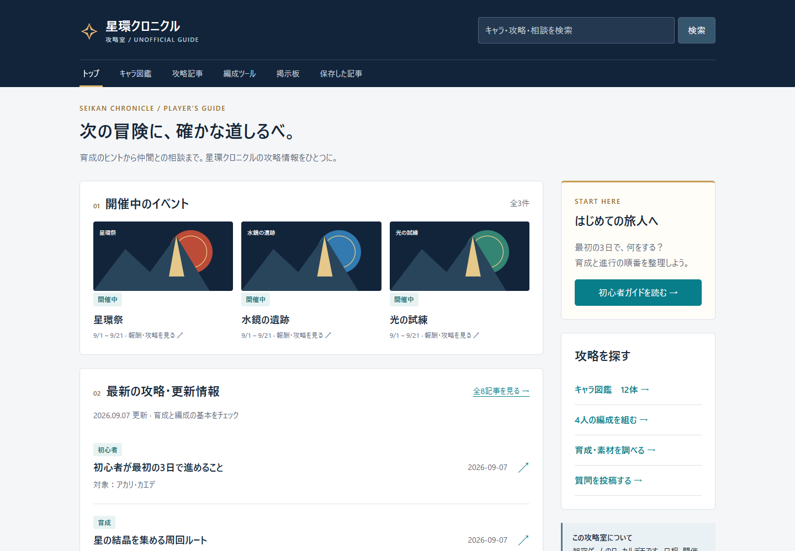
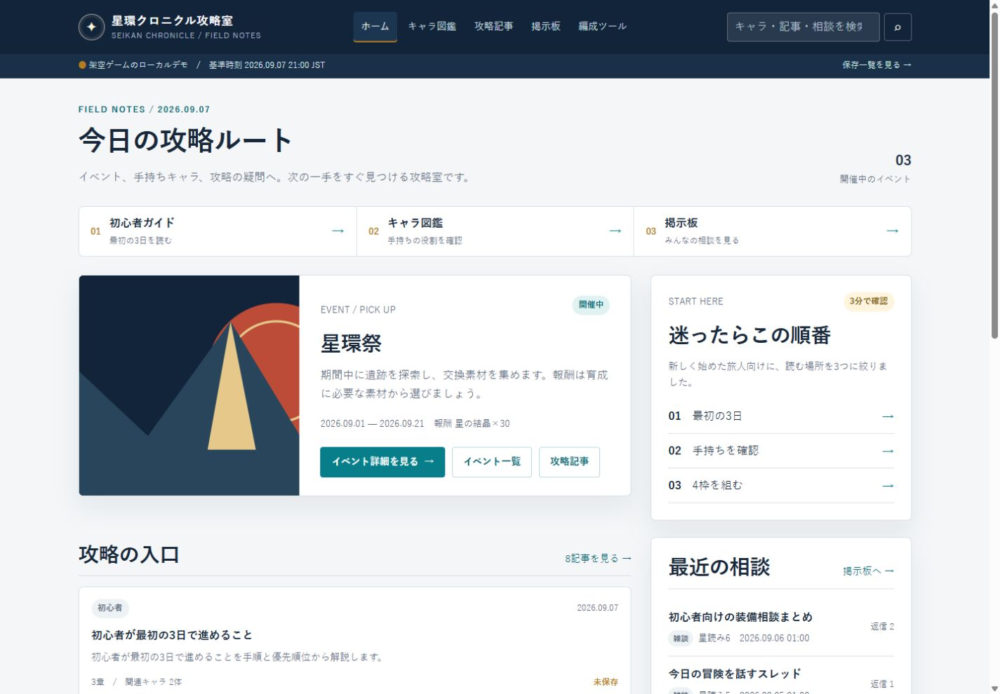

FIXED INPUT EXPERIMENT / 2026.09.08
同じ攻略サイトを、
Astra単騎とハイブリッドで。
星環クロニクル攻略室の2案。共通設計・素材は同じ。画面、制作負荷、検証の範囲をまとめました。
最終版 / PC。プレビュー内をスクロールできます。

B / ASTRA LOW + LUNA HIGH
Astra ＋ Luna high
Astraが設計・レビュー・検証、Lunaが実装・修正。冒頭の3つの入口と、画像・説明を分けたイベント紹介。
ハイブリッド版を開く →同じ完成条件での勝敗は未確定です。 単騎は自己検証で17項目PASS、独立評価は未実施。ハイブリッドはLunaのブラウザ接続失敗後、ユーザー指示で検証をAstraへ変更。保存障害・別キー保持などの実ブラウザ検証に未実施範囲が残ります。初回保存までの検証・助言の入り方も異なります。
終了時ログで揃えた使用量
準備・失敗した接続確認・待機・報告を含む試行セッション全体。ハイブリッドは親＋子。実費は未取得です。
| 計測項目 | Astra単騎 | Astra＋Luna |
|---|---|---|
| 計測データを読込み中 | ||
キャッシュ入力と推論出力は内数。入力総量は新規資料量ではありません。実経過時間を親子の実行時間の合計に置き換えていません。Fastは要求値で、実配信tierは未確認です。
プレビューは各試行の保存画像です。切替は画像のみで、「サイトを開く」は常に最終実装を開きます。初回ソースは各案のスナップショットに保存されています。